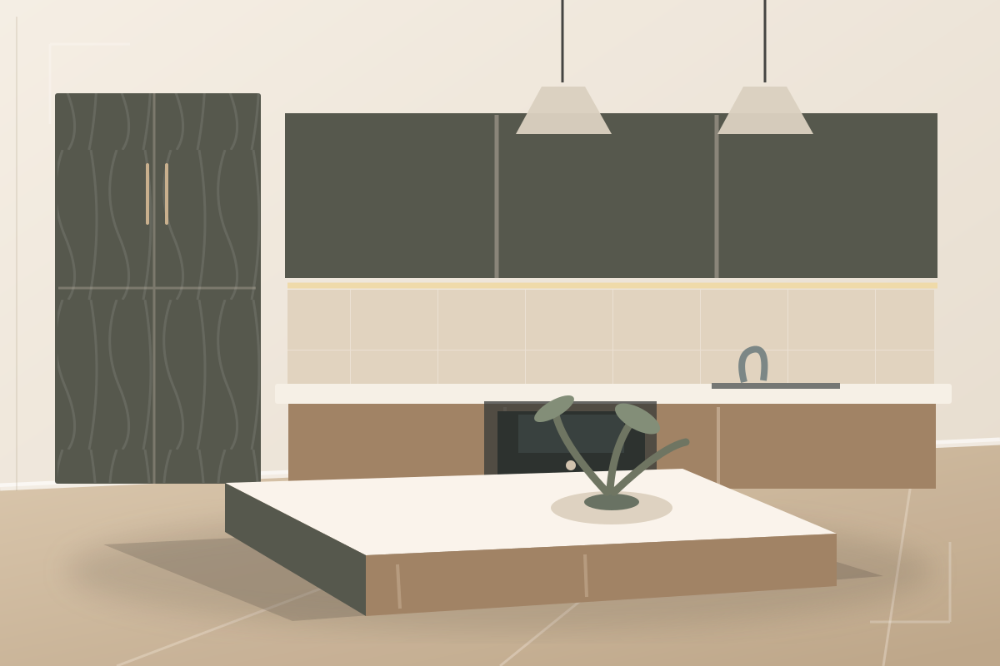

Мебель, которая
живёт по вашим
правилам.
Проектируем и изготавливаем кухни, шкафы и мебель для всего дома. Свой производственный цех в Стрелецком — от идеи до установки.

С ХАРАКТЕРОМ
Для жизни.
Не для каталога.
Встроить, совместить, спрятать лишнее, добавить света — каждый проект начинается с потребностей помещения.


От размеров
до последней петли.
За внешней простотой хорошей мебели — точный расчёт, фасады, скрытые механизмы и внимание к сборке.
Производство в селе Стрелецкое, улица Хрустальная, 3.
Фрезеровка фасадов, подсветка, системы открывания и удобное наполнение.
Опыт изготовления мебели указан в описании компании.
* Заявление самой компании. Условия производства, гарантий и замера уточняются перед заказом.
Новые работы.
Конкретные детали.
Сведения о проектах — из VK за ноябрь 2026 года. Изображения в демоверсии — авторские архитектурные эскизы вместо фотографий клиентов.
Фактура.
Свет.
Тактильность.
В ноябрьских проектах встречаются эмаль Marrone Scuro, «Дуб Каштан», «Графит Нубук», стекло в алюминиевом профиле и фурнитура Samet. Посмотрите, как материалы влияют на общий характер мебели.
Материалы и фурнитураОт замысла
к предмету.
Никакой сложной формы на старте: соберите параметры будущей мебели, а детали уточните на замере.
Собрать заявкуВыберите кухню, шкаф или другое изделие, укажите размеры и пожелания.
Материалы, фурнитуру, дизайн и возможность замера обсуждают с компанией.
Состав и цена рассчитываются после уточнения параметров заказа.
Обсудим мебель
под ваши размеры?
Можно начать с нескольких слов, фотографии или плана помещения.